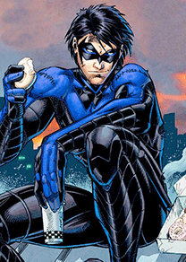

Dick Grayson
History
Dick Grayson is a vigilante in the Batman Family and the original hero known as Robin. Eventually, he outgrew this position and was inspired by Superman to become Nightwing, while Jason Todd and Tim Drake succeeded him as Robin. Following the disappearance of Bruce Wayne, he succeeded his mentor to become Batman with Damian Wayne as his Robin during Battle for the Cowl. Bruce's return allowed them to both wear the mantle as part of Batman Incorporated, although Grayson has since then returned to his Nightwing costume in Traps and Trapezes.
Flying Graysons
Dick Grayson was a twelve-year-old circus acrobat, the youngest of a family act called The Flying Graysons of The Haley Circus. Dick joined the act at a very young age, having been trained in acrobatics from birth. While on tour in Gotham City, he overheard "Boss" Tony Zucco, a well-known and feared crime-lord, threaten the performers unless the circus's owner paid extortion money. The owner refused, and that night Dick watched in horror as his parents' high wire snapped, sending his parents hurtling to their deaths, all while many of Gotham's elite watched on. Young Dick felt responsible, because he didn't warn his parents in time.